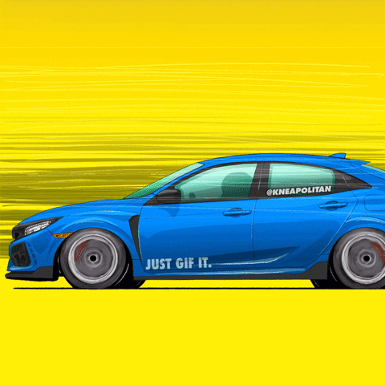
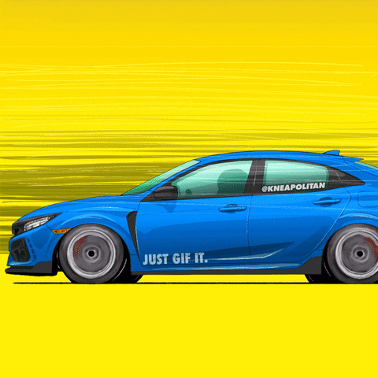

HONDA- Power of dreams
The Honda Civic Type R is a series of high-performance hatchback/sedan models based on the Civic, developed and produced by Honda since September 1997.
The first Civic Type R was the third model to receive Honda's Type R badge (after the NSX and Integra).
Type R versions of the Civic typically feature a lightened and stiffened body, specially tuned engine, and upgraded brakes and chassis, and are offered only in five- or six-speed manual transmission.
Like other Type R models, red is used in the background of the Honda badge to give it a special sporting distinction and to separate it from other models.
Source: HONDA-WIKI
Social media:
 
